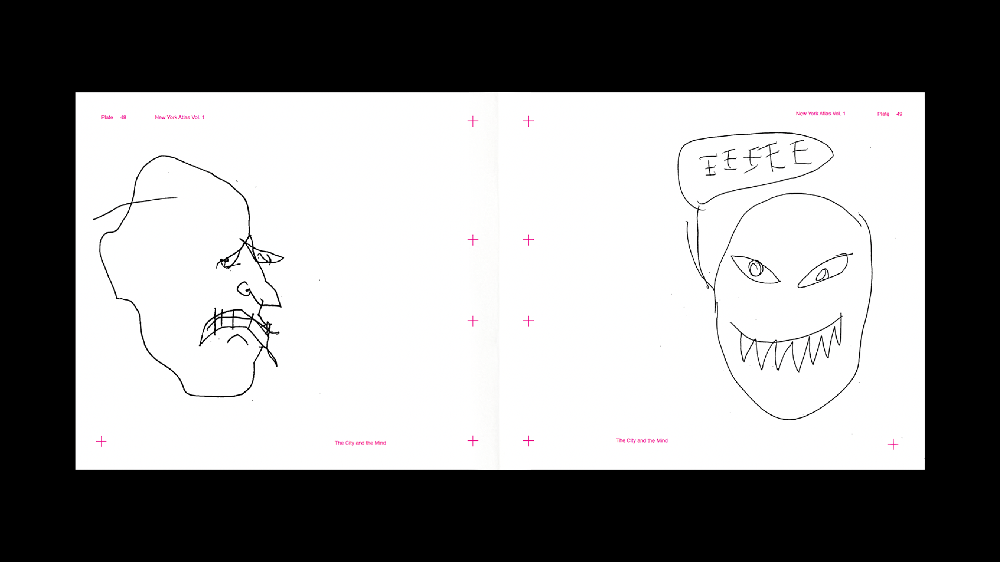
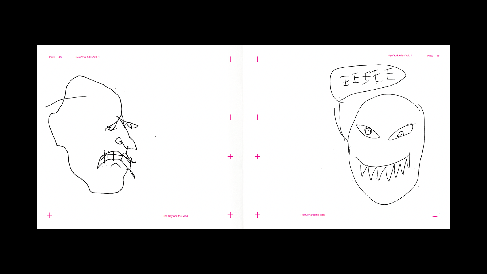

Overview
New York, New York explores the paradox of documenting a city that exists simultaneously as place and perpetual self-image. Through an interwoven series of publications, video installations, and 3D reconstructions, the project examines how personal and collective memories shape urban identity. Street View screenshots trace emotional geographies through fast food chains and childhood homes, while a collaborative atlas—created in a slow elevator—captures fleeting interpretations of the city through spontaneous drawings. The work deliberately exposes the limitations of digital preservation, using photogrammetry's partial perspectives and glitches to reveal how memory, like the city itself, is both a shared construction and a constantly evolving fragment.
Project Debrief
Project Overview
- Exploration of personal and collective memory in urban space
- Documentation of fleeting moments in perpetual change
- Investigation of shared experience through multiple media
- Examination of digital and physical preservation
Key Themes
- Memory as both personal and collective construct
- Digital preservation's limitations and possibilities
- Urban space as shared narrative
- Documentation as both truth and fiction
Project Scope
- Three interconnected publications
- Video narrative exploration
- 3D photogrammetry installation
- Collective memory documentation
Published Works
Publication Approach
- Multiple perspectives on shared spaces
- Combination of found and created content
- Integration of public participation
- Documentation of ephemeral moments
Digital Works
Video Installation
3D Reconstruction
Digital Methodology
- Photogrammetry as memory metaphor
- Video as temporal exploration
- Digital artifacts as preservation
- Technology's role in memory formation
Theoretical Framework
Memory & Space
- Collective vs individual memory
- Urban space as palimpsest
- Digital preservation paradox
- Narrative in shared spaces
Documentation Methods
- Found photography as historical record
- Participatory memory collection
- Digital vs physical archives
- Temporal documentation strategies
Critical Position
- Memory as collective construction
- Documentation as creative act
- Technology's role in preservation
- Urban identity formation


 
